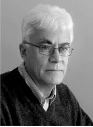

David Consuegra
 He was born in Bucaramanga, the capital of Santander Department. At the age of 16, he traveled to the United States to study fine arts at Boston University, where he graduated cum laude. He then went to Yale University, where he graduated with highest marks in 1963 and was made a professor. He worked with Paul Rand at his New York studio.
He returned to Colombia, becoming a university professor at Universidad de los Andes, Universidad Nacional (where he was designated professor emeritus in 1991) and Universidad Jorge Tadeo Lozano, where he founded the first graphic design studies program at a Colombian university in 1967. However, he participated in Universidad Nacional's advertising design contests in 1966, 1977, and 1982, which changed his career path to being a graphic designer.
In 1964 and 1968 respectively, he founded the magazines Nova and Acte梟. Also in 1964, the Museo de Arte Moderno in Bogot?hired him as a graphic designer. Consuegra would design the logo for the museum (seen at right). He continued to teach; he would also be a visiting professor at Virginia Commonwealth University in 1984 and Barcelona University in 1998. He also published works, including a translation and edit of Rudolf Koch's The Book of Signs, as well as his own: ABC del dise杘 de marcars; Origami, el arte del doblez; and El dise杘 tipogr噁ico. In 1994, he joined Belgium's International Trademark Center.
He died on 30 October 2004, in Mexico City, while participating as a judge in an art contest there. He died of a "sudden and immediate" heart attack.